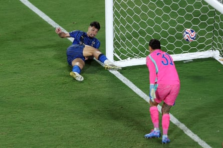
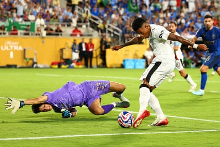

What a last-16 tie, what a triumph for Al-Hilal, what crushing disappointment for Manchester City who, as the contest aged, gradually lost shape and tempo and crumpled in this shock of the Club World Cup.
The killer blow of a breathless extra-time featuring three goals was administered by Marcos Leonardo in the 112th minute. Along the left, Renan Lodi curved a cross in, Sergej Milinković-Savić rose and headed, Ederson palmed out, and the Brazilian struck his second of the contest. Leonardo headed for a corner flag to begin the Al-Hilal party and the camera panned to Phil Foden who eight minutes before seemed to have saved City.
This was via a magical moment that stated the 25-year-old would not allow City to be knocked out by Kalidou Koulibaly’s earlier extra-time strike. Rayan Cherki looked up and spun a lob over Al-Hilal’s defence for Foden. Running on, the No 47 eyed the ball all the way and sculpted a volley across keeper Yassine Bounou to finish from the tightest of angles and make it 3-3 for a sublime equaliser and his 100th City goal in his 319th appearance.
On a sweltering Orlando night, City had previously conceded four minutes into the added 30 when Ruben Neves’s corner had Koulibaly leaping and beating Ederson. At this juncture City’s disarray was shown by Ruben Dias and Nathan Ake allowing Koulibaly the freedom to steer home. Then, moments later, Rodri, a 53rd-minute substitute, being replaced himself by Pep Guardiola, for Foden: the Ballon d’Or holder and manager passed with eyes averted from each other.
At stake for City had been a quarter-final place and £9.6m for the win to take their tournament winnings to £47.4m. But this is now no more as they jet home with Guardiola surely rueing not introducing Foden earlier or even naming him in the starting line-up.
Marcos Leonardo scores a late goal for Al-Hilal against Manchester City at the 2025 Club World Cup.Photograph: Megan Briggs/Getty Images
Nine minutes were gone when City opened the scoring with a controversial strike. Rayan Ait-Nouri motored along the left, crossed, the ball bounced about Al-Hilal’s area, hit Ilkay Gundogan, and Bernardo Silva scrambled in off a shin. Now, uproar from Simone Inzaghi’s players whose vociferous claims to referee Jesús Valenzuela were for handball in the build-up.
Replays suggested two – off Ait-Nouri and Gundogan – but the on-field referee and VAR maintained the finish was fine. Protests continued by the centre circle, Al-Hilal pointed to the Camping World Stadium screen, where the move was again shown, as proof, but Valenzuela took to his PA-powered mike to declare the goal “legal”.
The bottom line: a City lead and Saudi Arabia’s leviathan club seeming to face a Sisyphean task, Guardiola’s men 71.3% possession hog underlining this. While still 1-0 hope remained. And City piled up the spurned chances to keep Al-Hilal optimistic. The culprits were Savinho – a flailing Yassine Bounou hand saved at his feet – Gundogan when running through, Josko Gvardiol, with his head, and Jeremy Doku, whose radar was also awry.
Manchester City attacker Savinho is denied by Al-Hilal goalkeeper Yassine Bounou during the Club World Cup round of 16 match.Photograph: Chris Brunskill/Fantasista/Getty Images
Inzaghi took over four days after Inter’s 5-0 Champions League thrashing by Paris Saint-Germain. He left an Italian giant for a Saudi one but ahead of taking on Real Madrid in the group opener had only two weeks to implement his ideas, a central plank of which is the favoured five-man backline he fielded tonight.
A 1-1 draw against the European aristocrats in his first game in charge was an eye-catching calling card but tonight Inzaghi was without his captain, Salem Al-Dawsari, or No 9, Aleksandar Mitrović.
Yet when Mohamed Kanno pinged in a ball from the right, Al-Dawsari’s stand-in created a golden opening for Leonardo, but the Brazilian’s header sailed high over Ederson’s bar.
Guardiola’s XI showed no Rodri, Foden or Cherki, but in Dias, Gundogan, Erling Haaland, Gvardiol and Silva a core of frontline acts were still fielded. All were wise enough to see a half-time shot count of nine to Al-Hilal’s three and know their advantage should not be slender.
This profligacy came home to roost 44 seconds into the second half. City had entered with a 13-2 aggregate in shots that belied how the goals against column could have been more due to the old issue of their high-line being exposed. So it was that Joao Cancelo got in behind and drove in a cross, Ederson beat out, Malcolm’s shot was blocked, and Leonardo finished.
Al-Hilal were jubilant, City stunned. Inzaghi’s unit was not finished: at a City corner Al-Hilal again broke, Ait-Nouri failed to react, so Malcolm sprinted through and struck home, rolling the ball past Ederson and inside the right post. City’s response was near-instant. From the left, Silva dropped in a corner, Haaland rose, the ball pinged off Koulibaly, then Ake, and Haaland steered home.
Guardiola had introduced Ake, Manuel Akanji and Rodri but as 75 minutes passed Foden remained watcher only. When Doku launched a breakaway he was scythed down, City wanted a free-kick, but Valenzuela blew for full-time and what ensued was Foden at last being thrown on but victory was Al-Hilal’s – one they will always savour – and a defeat City may not be allowed to forget.